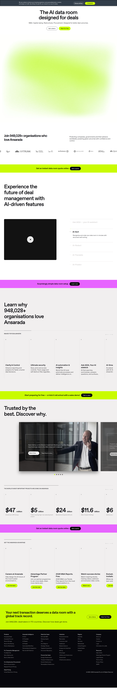
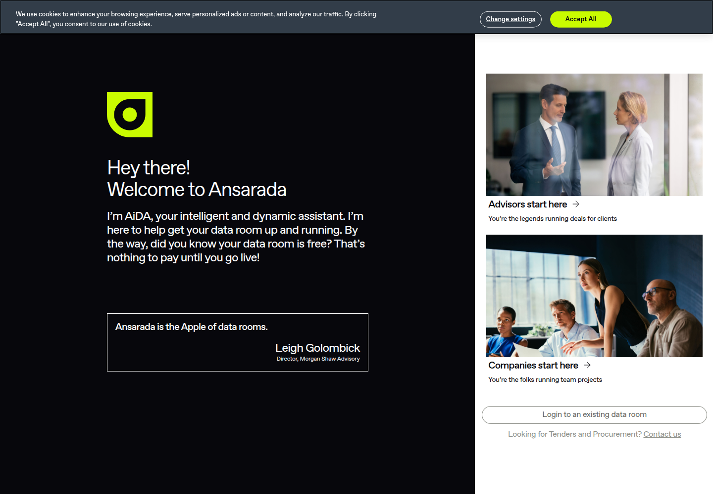
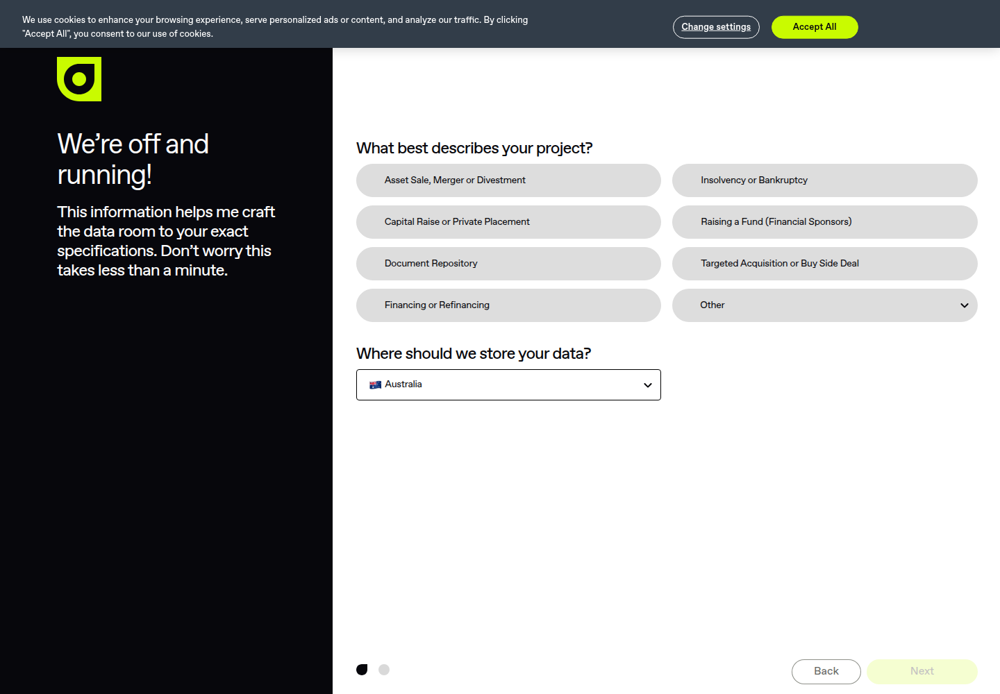

Profile
- Company
- Ansarada
- Url
- https://ansarada.com/
- Source Category
- NDA & deal-room tools
- Research Status
- Deep Cited Research / Draft Complete
- Current Status
- live but ownership changed - Ansarada was acquired by Datasite (a competing VDR provider, backed by CapVest) for approximately AUD 236 million / USD ~$155-263M depending on source, announced Feb 13, 2024, and delisted from the ASX following completion in 2024. The ansarada.com site remains live and branded independently as of 2026 (verified via direct fetch, HTTP 200, footer copyright '© 2005-2026 Ansarada Pty Ltd'), operating as a Datasite-owned subsidiary/brand rather than an independent public company.
- Founded Launch Year
- 2005
- Company Age
- ~21 years (as of 2026)
- Hq Country
- Australia (Sydney - '80 George Street, The Rocks, NSW')
- Operating Area
- Global - lists regional presence in Australia, Africa, Germany, Netherlands, United Kingdom, United States, Vietnam; claims 948,028+ organisations across 170 countries
- Target Users
- Investment bankers, M&A advisors, private equity/corporate development teams, law firms, government/infrastructure procurement bodies (notably broader than just startups - heavy focus on large-scale M&A and government tenders)
- Product Category
- AI-powered data room / secure document sharing; NDA/e-sign gating; procurement/tender management (Ansarada Procure) - enterprise M&A and infrastructure-deal focused, not a startup/founder matching tool
Product Flows
- Swipe Card Interface
- no - not found; no swipe/card UI in product; standard folder/dashboard interface
- Mutual Match
- no - not applicable
- Ai Matching Scoring
- yes - bidder prediction/scoring
- Ai Deck Scoring
- yes - AI data-room/content analysis, not pitch-deck-specific
- Founder To Founder Flow
- Not a matching product; closest equivalent is enterprise-grade: deal admin sets up a data room -> uses AI-Sort to auto-organize uploaded documents -> invites bidders/counterparties with granular, trackable access permissions -> recipients interact via a two-way Q&A/RFI tool with AI-assisted answer suggestions -> AI-Redact applies smart redaction and AI-Translate handles multi-language docs -> admin can remotely self-destruct files regardless of where they were saved, even after download.
- Founder To Investor Flow
- Same data-room/Q&A mechanism applied to 'Capital Raising' and 'Deal Marketing' use cases; AI assistant 'Ask AiDA' answers investor questions by sourcing directly from the data room's documents. Positioned for larger raises/late-stage or M&A-adjacent capital events rather than early-stage founder-investor matching.
- Project Profiles
- not found / no public source - no concept of persistent company/project discovery profiles; Ansarada is deal-room-per-transaction, not a directory/marketplace of projects
- Messaging Collaboration
- yes - AI Smart Q&A
- Mobile App
- Partial - platform is accessible on mobile devices/browsers per third-party review coverage; no dedicated native app-store listing confirmed in this pass (source confidence low-medium)
- Web App
- yes
Security & Documents
- Nda Gated Unlock
- not confirmed as a named/dedicated feature on the homepage (no explicit 'NDA gating' feature callout found in available evidence, unlike Digify/Carta/SecureDocs which name it explicitly); Ansarada's security messaging instead emphasizes granular access/save/print controls and remote self-destruct rather than a specific NDA-acceptance gate. Treat as 'not found / no public source' rather than a confirmed 'yes'.
- Data Room
- yes
- E Signature
- not clearly confirmed as a native e-signature product in the evidence gathered (Ansarada's product suite emphasizes data rooms and procurement tools; no dedicated e-sign feature page found in this pass) - downgrade from prior pass's unqualified 'yes' to 'not found / no public source' pending further verification
- Meeting Prep Ai Briefing
- yes - AiDA answers/summarizes room content
Pricing, Funding & Traction
- Pricing Model
- Transparent published pricing (marketed explicitly as a differentiator: 'We display our pricing on our website. No get-price buttons. No tricks.'); tiered by product (Deals vs Procure) with self-serve 'Start for free' option plus enterprise/demo sales path
- Business Model
- B2B SaaS subscription, enterprise/government contracts for Procure line, self-serve entry tier for smaller M&A deals
- Total Funding
- ~$24-52.8M raised pre-IPO (sources vary: PitchBook cites $52.8M; a 2019 raise was $24M led by Ellerston Capital); went public via reverse/backdoor merger with ASX-listed thedocyard in December 2020 (A$45M capital raise as part of that merger); acquired by Datasite for ~AUD 236 million (~USD 155-165M) in 2024, delisting from ASX
- Funding Rounds
- Private VC rounds (incl. ~$24M round led by Ellerston Capital, ~2019) followed by public listing via reverse merger with thedocyard (ASX: AND) in Dec 2020, raising A$45M as part of that transaction
- Investors
- Ellerston Capital, Tempus Partners, Belay Capital, Australian Ethical Investment, Five V Capital, Folklore Ventures (per Crunchbase/press); acquired by Datasite (backed by CapVest Partners) in 2024
- Funding Source Type
- VC-backed, then public company (ASX-listed), now a subsidiary of a PE-backed strategic acquirer (Datasite/CapVest)
- Last Funding Date
- Acquisition by Datasite completed 2024 (announced Feb 13, 2024)
- Users Traction
- Homepage claims 948,028+ organisations across 170 countries have used the platform; G2 rating 4.6 stars from 234 reviews
- Deals Funding Facilitated
- Homepage cites marquee deals run on the platform: $24 billion Blackstone acquisition of AirTrunk, $11.6 billion sale of Qube Holdings, $6.5 billion Sembcorp/Alinta Energy acquisition, $5 billion public housing redevelopment project, among others
- Partnerships
- Advantage Partner Program for advisors; Partner Marketplace; integrations via API-Integrate/Automated Workflow tools
- Media Coverage
- Extensive Australian financial press coverage of the Datasite acquisition (Capital Brief, Business News Australia, MLex, DLA Piper/Allens legal advisories, ACCC regulatory review); historically covered as an ASX-listed tech company
- Product Update Activity
- Active - AI feature suite (AiDA, AI-Sort, AI-Redact, AI-Translate, AI-Predict) is a 2024-2026-era addition per Ansarada's own blog ('Meet AiDA, your first AI deal team member'), indicating ongoing investment despite the ownership change
- Acquisition Rebrand History
- Reverse-merged with ASX-listed 'thedocyard' in Dec 2020 to achieve public listing (ASX: AND); acquired by Datasite for ~AUD 236M in 2024, delisted from ASX; Ansarada's separate ESG/governance/board products were carved out and sold to an entity linked to co-founder/CEO Sam Riley for A$500,000 as part of the deal. Brand and product still operate as 'Ansarada' as of 2026.
Scores
- Product Overlap Score
- 2
- Feature Maturity Score
- 4
- Market Traction Score
- 3
- Funding Strength Score
- 3
- Ai Depth Score
- 3
- Nda Security Strength Score
- 4
- Network Moat Score
- 2
- Direct Threat Score
- 2.9
- Source Confidence
- Medium-High
Evidence Notes
- Primary Sources
- https://ansarada.com/
https://www.ansarada.com/data-room/ai-predict
https://www.ansarada.com/blog/meet-aida
https://help.ansarada.com/en/articles/12497807-who-is-aida - Secondary Sources
- https://www.capitalbrief.com/briefing/datasite-to-acquire-ansarada-for-263m-a4d30fc1-3bb9-43bd-9d94-48b937bfd100/
https://www.dlapiper.com/en-us/news/2024/02/dla-piper-advises-ansarada-on-its-aud236-milion-sale
https://www.accc.gov.au/public-registers/mergers-registers/public-informal-merger-reviews-register/datasite-llc-ansarada-group-limited
https://www.hsfkramer.com/news/2020-12/herbert-smith-freehills-advises-thedocyard-limited-on-its-merger-with-ansarada-newco-pty-ltd
https://www.g2.com/products/ansarada/reviews
https://www.crunchbase.com/organization/ansarada - Unsupported Claims
- Prior pass total_funding field ('$1.1 billion Series G... $47 million... $5 billion... $24 billion...') was a scraper artifact mixing marquee DEAL VALUES run through the platform with actual company funding rounds - corrected here to reflect Ansarada's own, much smaller, funding/capital history.
- Contradictions
- Prior pass's total_funding field conflated customer deal values (e.g., '$24 billion Blackstone Acquires Airtrunk') with Ansarada's own funding - this is a clear scraper error, now corrected and those deal values moved to deals_funding_facilitated instead. E-signature and NDA-gating 'yes' flags from prior pass could not be independently confirmed as named features in this pass; downgraded to 'not found' pending direct product-page verification.
- Last Checked
- 2026-07-19
- Notes
- IMPORTANT STATUS CHANGE: Ansarada is no longer an independent company - acquired by rival Datasite in 2024 and delisted from the ASX. It continues operating under its own brand as of 2026, but ownership/strategic direction now sits with Datasite/CapVest. This is a material change from the prior pass's blank/uninvestigated ownership status.
Registration Flow
Research date: 2026-07-19. Screenshots are sanitized public copies from the private registration-flow capture set; credentials, tokens, verification links/codes, browser chrome, and private identifiers are not intentionally published.
Outcome: stopped at required truthful-details / submission boundary.
Stop point: Untouched Companies onboarding classification screen with no project selected and Next disabled, before entering credentials, submitting profile details, creating a data room/account, going live, selecting a paid plan, or requesting email verification
Blocker / boundary: Ansarada requires the user to choose a truthful project type and data-storage region before continuing. The authorized credential file supplies only registration credentials, not project/business intent or storage-jurisdiction authorization; selecting a transaction, fundraising, financing, insolvency, acquisition, or other project purpose would be inappropriate to guess.
- Official public homepage. Ansarada's official homepage presents its AI-powered data room for M&A, capital raising, restructures, and procurement. A prominent 'Start for free' action leads into the official freemium signup flow.
- Free data-room path selection. The official signup page welcomes the user and states that the data room is free with nothing to pay until it goes live. It offers separate 'Advisors start here' and 'Companies start here' routes, plus existing-data-room login and procurement contact paths. The Companies route was opened because it is the general team-project path and does not itself submit an application or create an account.
- Company project classification and stop point. The Companies route first asks what best describes the project and where its data should be stored. Project choices include asset sale/merger/divestment, capital raise/private placement, document repository, financing/refinancing, insolvency/bankruptcy, raising a fund, targeted acquisition/buy-side deal, and Other. Australia is preselected as the data-storage region, no project type is selected, and Next is disabled. The flow was stopped because choosing a project purpose and data-storage jurisdiction requires truthful user/business intent and several options are transaction or fundraising-related.


